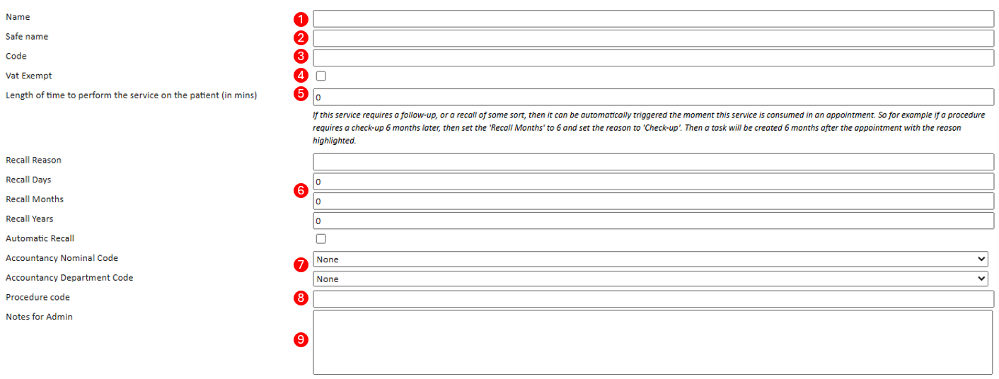
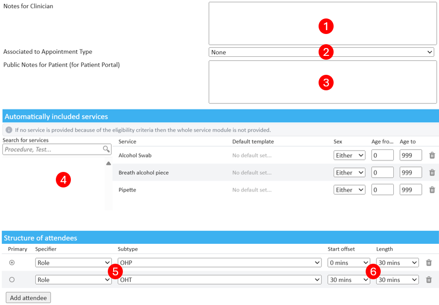
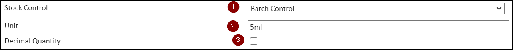

Services within Meddbase are defined as anything that can be provided to patients as part of an appointment or charged for directly outside of an appointment. These services are defined in the Service Management area of Meddbase.
Services are split into 6 types:
Modules - Contains a group of services for regularly applied combinations.
PACS - Imaging-type services that can send requests to modalities or PACS providers automatically.
Procedures
Products
Tests - Allows access to the ‘Path Lab’ feature to generate laboratory request forms or send requests electronically where available
Vaccinations
What is the purpose of the article?
This article outlines how to configure the different service types available.
This article will walk you through the following sections:
Default Service Configuration Fields
Additional configuration options relevant to specific Service Types
Modules
PACS
Products and Vaccinations
Tests
How to Edit a Service Type
Setting up Service Types via Service Management
Another aspect of configuration is governed by Service Management, where Modules, PACS services, Procedures, Products, Tests and Vaccinations you wish to offer can be defined.
Meddbase can accommodate various workflows and since different providers have different ways of providing services and different workflows apply to them, there is no right or wrong way to configure appointment types and services. Some providers only configure appointment types and no services, others configure a handful of core appointment types and configure all other services in Service Management, e.g. as Modules.
How to create a new service type
To begin to configure a new service type, from the Start Page, navigate to Admin > Service Management, hit New and select the service type you'd like to create.
When a new service is created, there are common values that can be applied for all service types. Then, depending on the service, additional fields are provided unique to that service type.
Default Service Type Configuration Fields
There are common configuration options for all service types. For each service type you can:
Assign a Name.
Assign a Safe Name- this will appear on an invoice instead of the 'Name' when this service is consumed.
Assign a Code - for reporting purposes e.g. service utilization.
Make service VAT Exempt or not.
Assign a length of Time- when this service is added to a booking, the time will be added to the overall booking length.
Define a Recall for the service - recall reason, recurrence and recall automation (a recall Task created automatically).
Assign Nominal and Department codes to the service - for accountancy integration and reporting purposes.
Assign a Procedure Code to the service - This is a space for CCSD codes to be automatically related to services. This will be reflected in invoicing and support the HealthCode integration.
Add Notes for Admin - this field allows adding a message that will be displayed as an on-screen pop-up to the Meddbase user booking this service. The user must accept the message before continuing.

From here you can:
Continue to add further configuration settings relevant to the service type (described in different sections below).
Save the service.
Additional configuration options relevant to specific Service Types
The below sections describe configuration options that are not common and are available for specific Service Types:
Modules:
Associated to Appointment Type - when booking via the Slot Finder, this module will only be available with the associated appointment type
Public notes for Patient Portal - these will be displayed under the module name when booking via the Patient Portal
Billing Type - allows billing for the module as a single service or procedure, or billing for individual services which make up the module
Service which make up the module - multiple services can be selected as parts of the module
Module attendees - multiple professionals can be required to conduct the module. They can be specified by their Specialism or Role Group they belong to.
The point in time (Start Offset) when an attendee is required and the length of time (Length) they are required for during the module can be configured, so that module attendees only get the required duration at the right time booked on their respective schedules.

PACS:
PACS Integrations are available within Meddbase, when this is enabled, the settings available for PACS service items are configurable:
Receiving Application - This is an optional field only used in some PACS integrations for mapping purposes
Receiving facility - The piece of equipment that will produce the image.
Modality - selecting the modality the PACS service belongs to; the option to create multipart PACS services is also available here.
Products and Vaccinations:
When Stock Control is enabled, this allows the management of stock on Products and Vaccinations. Stock Control is a system feature that can be used to manage stock within Meddbase. When this is enabled, you will need to set the type of stock control you wish to use on your Products and or Vaccinations.
Stock Control - selection of the type of stock control the product or vaccine will be governed by. Stock Control allows tracking quantities, Batch Control allows tracking quantities, expiry dates, batch numbers and trade names
Unit - what is a single unit of the product or vaccine e.g. 5ml ampoule, pack of 10 etc.
Decimal Quantity - allows dispensing decimal quantity when the unit is larger than the amount dispensed

Tests:
Expected turn-around (in days) - the value entered here can trigger a task and/or email after the stated length of time had elapsed1
Provider - The laboratory providing the test and examining the specimen written in capital letters2
Print Code - TDL laboratories require a print code for all tests they process. The codes are provided by the laboratory from their catalogue.
1The above requires 'service reminder' to be enabled under Admin>Configuration>Task Checker
2 Meddbase supports electronic pathology request and/or response with TDL and HCA laboratories in the UK. Non-UK laboratories are not supported for electronic request/result and a manual process would apply.
How to Edit a Service Type
This process is very similar to creating a new service (as described above). To do this:-
From the Start Page, navigate to Admin > Service Management
Navigate through the list of existing services
Select the item to be edited
Make changes (using the ‘How to create a service’ as an option)

![[Full alt text]](images/Service%20Management.gif)